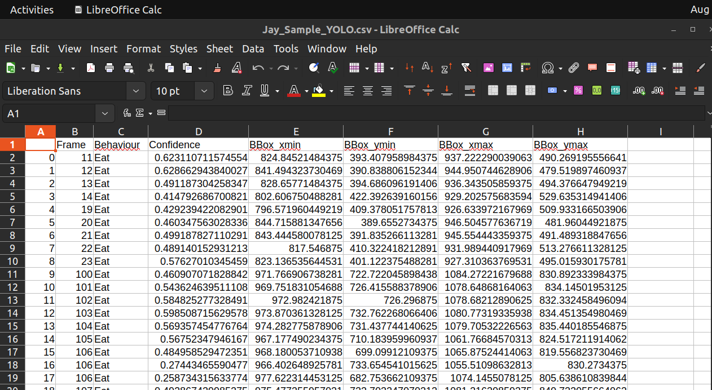

Visualization and inference
Now that you have a model trained, its time to see how good the model is. I have prepared two scripts for this, first is just for visualizing, and the second one is for inference, where the results will be saved as a pickle or a csv.
Visualization
The script to visualize results is Code/3_VisualizeResults.py. This script requires the trained model and a sample video. Here are the arguments:
--Video: Path to the sample video
--Weight: Path to YOLO weight file (See Model training. for more details)
--Start: Start frame
--Frames: Total number of frames, -1 means all frames
To run this on the Jay sample video, you can run this in the terminal:
python Code/3_VisualizeResults.py --Video "./Data/JaySampleData/Jay_Sample.mp4" --Weight "./Data/Weights/JayBest.pt" --Start 0 --Frames -1
This should then launch a window where the video will be playing, with detected bounding boxes drawn on top. It will also save the results as a video in the current directory, called YOLO_Sample.mp4
Inference
If you are happy with the results, you can then proceed to run inference in a whole video. The script for this isCode/4_RunInference.py, which takes in a video and outputs results as a pickle or csv. The sample scripts only does this for 1 video, so I highly encourage you to extend the script to do multiple videos! Here are the arguments:
--Video: Path to the sample video
--Weight: Path to YOLO weight file (See Model training. for more details)
--Output: Output type, either “csv” or “pickle”
To run this on the Jay sample video, you can run this in the terminal:
python Code/4_RunInference.py --Video "./Data/JaySampleData/Jay_Sample.mp4" --Weight "./Data/Weights/JayBest.pt" --Output csv
This will run inference and save the results in a csv, with the same name as the video, in the video’s directory.
Data Formats
If you chose to save it as a pickle, the data is actually saved as a big python dictionary. You can load it back using the pickle library within python, and access the data like this:
###This is within python!!! Not the command line
import pickle
with open("Data/JaySampleData/Jay_Sample_YOLO.pkl", "rb") as f:
data = pickle.load(f)
The dictionary is structured as follows:
{frame_number: {
"Class": [list of classes detected],
"conf": [list of confidence scores],
"bbox": [list of bounding boxes]}
}
Within the dictionary, each frame number is a key, which can be used to return detections from that frame, e.g. data[0] will return the detections from the first frame.
Within each frame, there is another dictionary, with keys “Class”, “conf” and “bbox”. These are strings of the classes detected, the confidence scores and the bounding boxes respectively. The bounding boxes are in the format of [x1, y1, x2, y2], where x1, y1 is the top left corner, and x2, y2 is the bottom right corner. If there are multiple bounding boxes detected for a given frame, the length of each list will be larger than 1. If nothing was detected in a frame, all the lists will be empty.
If you decided to output as a csv, this is what the data looks like:
- Here are the columns:
Frame: Frame number
Behaviour: The type of behaviour detected
Confidence: The confidence score of the detection
BBox_xmin: The x coordinate of the top left corner
BBox_ymin: The y coordinate of the top left corner
BBox_xmax: The x coordinate of the bottom right corner
BBox_ymax: The y coordinate of the bottom right corner
Next section, I will go through the model validation and optimization using grid search, for that I always use the pickle format reduce the need of converting between data structures. So if you would like to follow along the further steps, I would go for the pickle format. But the csv format is just much easier to deal with for any further programming language you use when deploying ther framework.